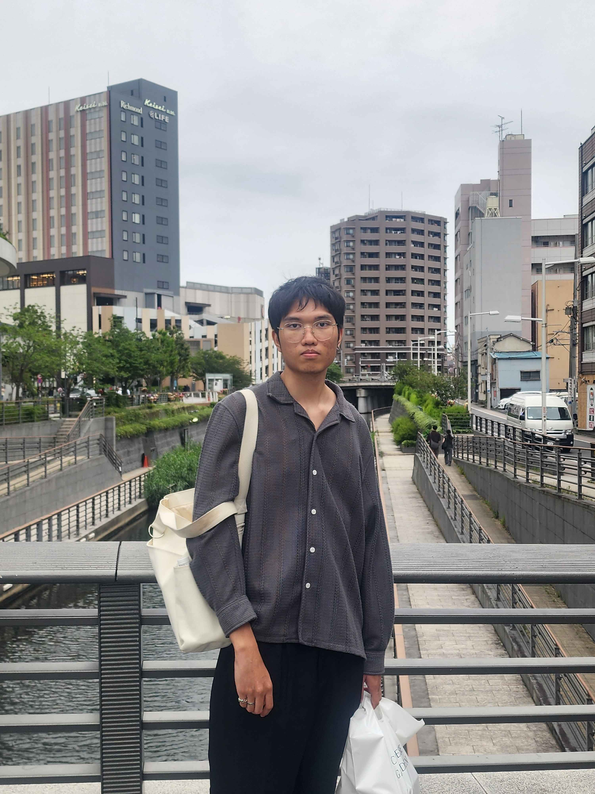

TOOLS
DEVELOPMENT
About Myself
Bunyapon Chaiongkarn
I'm a Game Developer
People usually called me by my nickname "Boong" or "Book". I have a passion for creating games that can touching people's heart.
Life Motto
Achievements
- 2nd Place KMUTT Game Jam 2025 - "Tag-A-Quack"
- "Rising Star Student Award" Game Talent Showcase 2022 - "Kalimba : Adventure Through Music"
-
Attended
- Thailand Summer Jam 2026 - Shameless Itim Lord 3
- Thailand Horror Jam 2025 - Yao Ying Yan
- Global Game Jam 2026: Game Dev Hub - CowCoolHaa GaHenChop
- "Chronicle of Khlong SAN: A Journey Through Time" Game Jam 2025 - Khlong San Sam Phob
- GMTK 2025 - Chicken vs Famous Restaurant
- GMTK 2024 - Is It Golf?
- Brackeys Game Jam 2025.2 - Crumble'N'Fumble
- Brackeys Game Jam 2024.1 - The Possessed Door(s)
Education
King Mongkut's University of Technology
GPAX 3.75 : Expected Graduation : April 2027
Bachelor of Science Program in Creative Technology
Interactive Simulation major.
Language
- Thai (Native)
- English (Fluent CEFR C1-Advanced)